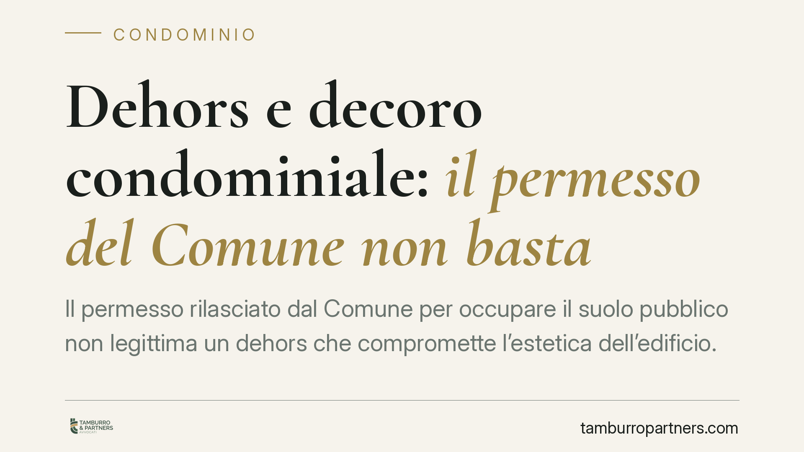

Dehors e decoro condominiale: il permesso del Comune non basta
Il permesso rilasciato dal Comune per occupare il suolo pubblico non legittima un dehors che compromette l'estetica dell'edificio. Lo ha stabilito il Tribunale di Torre Annunziata, ordinando la rimozione della struttura e confermando che l'amministratore può agire da solo a difesa delle parti comuni. Una pronuncia che incide sul rapporto tra attività commerciali e condominio.

Il caso
Un esercizio di ristorazione installa un dehors — la struttura esterna con tavoli, coperture e delimitazioni destinata alla somministrazione — davanti ai locali situati al piano terra di un edificio condominiale. L'esercente dispone del permesso comunale per l'occupazione del suolo pubblico. I condomini, però, lamentano che la struttura altera l'aspetto del palazzo.
Il Tribunale di Torre Annunziata ha dato ragione al condominio, ordinando la rimozione del manufatto. Il punto centrale: l'autorizzazione amministrativa non mette al riparo da eventuali lesioni dei diritti privati dei residenti.
Inquadramento normativo
La decisione poggia su due piani distinti.
Il primo riguarda la legittimazione ad agire dell'amministratore. L'art. 1130 n. 4 del Codice civile gli attribuisce il compito di compiere gli atti conservativi relativi alle parti comuni dell'edificio. Rientra in questa funzione anche l'azione giudiziale volta a rimuovere un'opera che pregiudichi l'estetica del fabbricato, senza necessità di una preventiva autorizzazione assembleare per gli atti meramente conservativi.
Il secondo piano attiene alla tutela del possesso: l'art. 1170 c.c. disciplina l'azione di manutenzione, lo strumento con cui si reagisce a molestie che turbano il godimento di un bene posseduto da oltre un anno. Il decoro architettonico — ossia l'armonia delle linee e dello stile che danno identità all'edificio — è un valore protetto in quanto bene comune: la sua compromissione incide direttamente sulle parti condominiali.
Il permesso di occupazione del suolo pubblico opera su un piano amministrativo: regola i rapporti tra il privato e l'ente pubblico. Non attribuisce alcun titolo a interferire con i diritti dei terzi, e tanto meno con quelli del condominio.
Implicazioni pratiche
La pronuncia chiarisce un equivoco diffuso. Molti esercenti ritengono che, ottenuta la licenza comunale, nulla osti all'installazione del dehors. Non è così.
La licenza certifica che l'occupazione del suolo è compatibile con l'interesse pubblico (viabilità, sicurezza, igiene). Non dice nulla sul rapporto con l'edificio privato cui la struttura si appoggia o davanti al quale si colloca. Se il dehors — per dimensioni, materiali, colori, copertura — stravolge l'aspetto del palazzo, i condomini possono ottenerne la rimozione anche in presenza di autorizzazione.
Per l'esercente, questo significa che l'investimento in una struttura non autorizzata sul piano condominiale resta esposto al rischio di smantellamento. Per i residenti, la sentenza conferma uno strumento di tutela concreto.
Va aggiunto un elemento sulla soglia della lesione: non ogni modifica dell'aspetto esterno integra una violazione del decoro. La giurisprudenza richiede un'alterazione apprezzabile e non trascurabile dell'estetica complessiva. La valutazione resta affidata al caso concreto, spesso con il supporto di una consulenza tecnica.
Cosa fare in concreto
- Esercenti: prima di installare un dehors, verificate il regolamento condominiale e i limiti sul decoro architettonico. La licenza comunale non è sufficiente. Acquisite, dove possibile, il consenso del condominio.
- Amministratori: documentate con fotografie e, se opportuno, con perizia tecnica l'impatto estetico della struttura prima di avviare qualsiasi azione.
- Condomini: segnalate tempestivamente l'installazione all'amministratore. L'azione di manutenzione ex art. 1170 c.c. richiede un possesso ultrannuale e va proposta entro un anno dalla turbativa.
- Prima del contenzioso: valutate una soluzione negoziata. La rimozione forzata è l'esito estremo; spesso è possibile concordare modifiche che rendano la struttura compatibile con il decoro.
- Verificate i titoli: controllate che l'amministratore agisca nell'ambito degli atti conservativi; per interventi che eccedono tale perimetro può occorrere la delibera assembleare.
La vicenda ribadisce un principio di fondo: autorizzazioni pubbliche e diritti privati viaggiano su binari separati. Chi opera sul confine tra attività commerciale e spazio condominiale deve presidiarli entrambi.
---
*Contributo informativo a cura di Tamburro & Partners - Avv. Giuseppe Tamburro. Non costituisce parere legale.*
Ogni condominio ha una storia a sé.
Se gestisci un'amministrazione e vuoi un confronto su una specifica questione condominiale, scrivi allo studio. Ti rispondiamo entro un giorno lavorativo.